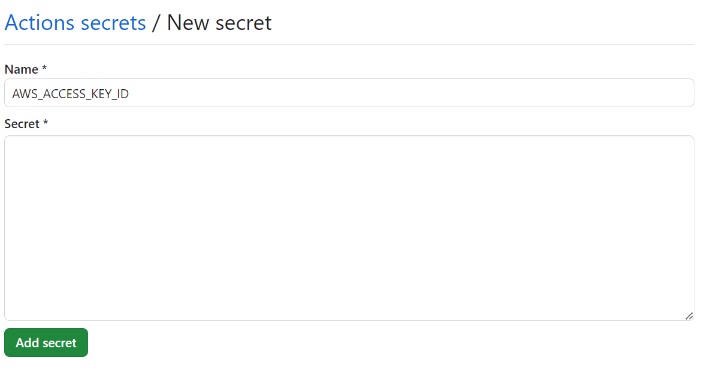
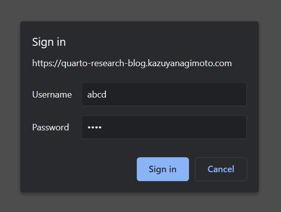

Make Jupyter Notebook or R Markdown a Blog
Jupyter Notebook and R Markdown are very useful tools for communication with co-authors and supervisors during the trial and error stage of research. However, as these files accumulate, it becomes difficult to remember the contents and you have to open them one by one.
Therefore, I thought about managing these analysis results like a blog. If you arrange daily reports in chronological order, it is natural to manage them in blog format. By using the functions of an existing blog, you can make it easier to find the content from the title or thumbnail, and manage it more efficiently with features such as tagging and search.
In this article, I will introduce how to manage research like a blog using Quarto. I myself show this type of blog during meetings with supervisors or co-authors to discuss the progress of the week. Also, I have provided a sample blog below, so you can get an idea. You can also check the source code on GitHub Repository.
Writing a Blog with Quarto
Quarto is a tool that extends R Markdown, and since it runs in the background with knitr, you can use R Markdown features as they are. Also, by using jupyter as the background engine, you can handle other languages such as Python and Julia.1
In this article, I will explain the unique features of Quarto and how to set it up as a website. To learn more about Quarto Markdown syntax and basic features, please refer to the official documentation.
Differences from R Markdown
Quarto can be written just like R Markdown, but the only difference is in the chunk options.
R markdown
```{r, include = FALSE}
mdl <- lm(mpg ~ wt, data = mtcars)
```Quarto
```{r}
#| include: false
mdl <- lm(mpg ~ wt, data = mtcars)
```I think this is a good notation because it is just a comment from the perspective of code execution, and it allows them to coexist with other languages such as Python and Julia.
Other notable features include Tabset Panel and Callout Blocks, which make it easier to read. Also, the notation for citations has become easier to understand.
Setting up the Website
_quarto.yml
This is a project-level configuration file. For details, please refer to the official documentation. My configuration file looks like this.
project:
type: website
output-dir: docs
preview:
port: 5556
browser: true
watch-inputs: true
navigate: true
website:
title: "Quarto Research Blog"
favicon: favicon.svg
navbar:
right:
- icon: github
href: https://github.com/kazuyanagimoto/quarto-research-blog
format:
html:
theme:
- cosmo
- custom.scssoutput-dir: docs: When hosting with GitHub Pages, you need to output HTML files to thedocsdirectory. If you deploy with GitHub Actions, it doesn’t have to bedocsfavicon: The favicon file. I often use the one from Icooon Monotheme: You can choose a theme from Bootswatchcustom.scss: You can set the CSS. Quarto has pre-defined Sass Variables, so you can easily customize it
Research often goes in a different direction from the research question set at the beginning. Therefore, the name of the repository and the actual research may differ. Following Dr. Andrew Heiss’s idea, I give the project a code name that has nothing to do with the research.
For example, the project I researched gender gaps in Japan has the code name common cheetah. This is generated using the codename R package.
library(codename)
codename_message()
#> code name generated by {codename} v.0.5.0. R version 4.2.2 (2022-10-31).
codename(seed = 210715, type = "ubuntu") # The day I started the project
#> [1] "common cheetah"By the way, with this Ubuntu-styling, an animal name is always assigned, so it’s easy to decide on a favicon. I don’t know if the co-authors will find it interesting…
_metadata.yml
This is a directory-level configuration file. For details, please refer to the official documentation.
freeze: auto
title-block-banner: true
last-updated: last-modified
execute:
echo: false
warning: false
message: false
format:
html:
code-tools: truefreeze: auto: Saves the results of code cells. If there is a change in the code, it will automatically update. This speeds up the compilation of the blog and allows you to generate HTML without running the code, such as with GitHub Actionsecho,warning,messageare hidden as they are not needed when reading the results as a blogcode-tools: true: This allows you to check the code from the top right of the page. This is useful for co-authors to quickly check the analysis content
Thumbnails
If you want to use an image file on your computer as a thumbnail, you can specify it with the image tag in the YAML header.
---
title: A Blog Post
image: path/to/image.jpg
---If you want to use a graph in the analysis as a thumbnail, you can set the chunk option classes: preview-image.
```{.r}
#| classes: preview-image
plot(cars)
```.gitignore
With the above settings, you can compile HTML files locally. Also, if you push it to GitHub as it is, you can publish it with GitHub Pages by setting docs/ as the root directory. However, managing automatically generated HTML files and libraries in Git is not an elegant way. It’s a hassle to resolve conflicts when they occur, and the repository size will increase. Therefore, ignore the docs/ directory in .gitignore and automatically generate HTML files with GitHub Actions as described below.
.gitignore
/.quarto/
/_site/
/docs/If it is fine to publish with GitHub Pages, you can run the following command to generate HTML files in the gh-pages branch and publish them as GitHub Pages.
quarto publish gh-pages --no-browserYou can run this command whenever you write an article, but you can automate it with the following GitHub Actions.
.github/workflows/publish.yml
on:
workflow_dispatch:
push:
branches: main
name: Quarto Publish
jobs:
build-deploy:
runs-on: ubuntu-latest
permissions:
contents: write
steps:
- name: Check out repository
uses: actions/checkout@v4
- name: Set up Quarto
uses: quarto-dev/quarto-actions/setup@v2
- name: Render and Publish
uses: quarto-dev/quarto-actions/publish@v2
with:
target: gh-pages
env:
GITHUB_TOKEN: ${{ secrets.GITHUB_TOKEN }}Adding Basic Authentication to AWS S3 + CloudFront
By using AWS S3 and CloudFront, you can publish a website with password authentication (Basic authentication) at a relatively low cost (about tens of cents per month). Please note that AWS specifications and pricing may change, so please follow the steps below at your own risk.
Create an S3 Bucket and Automatically Deploy with GitHub Actions
Step 1: Create an S3 Bucket
Create a bucket from S3 in the AWS console. It is easy to understand if the bucket name is the same as the GitHub repository. The settings can be left as default. Since access is via CloudFront, block all public access to the bucket.
Step 2: Create an IAM User and Get the Access Key
Create a user from IAM in the AWS console and give it full access to S3 (AmazonS3FullAccess) as the policy. Then, get the access key and save it in a safe place.
Step 3: Register the Access Key in GitHub Secrets
Open the repository’s Settings from GitHub and register AWS_ACCESS_KEY_ID and AWS_SECRET_ACCESS_KEY as new repository secrets.

Step 4: Deploy with GitHub Actions
By setting up GitHub Actions as follows, HTML files are automatically deployed to the S3 bucket when pushed to the main branch.
.github/workflows/publish.yml
on:
workflow_dispatch:
push:
branches: main
name: Quarto Publish
jobs:
build-deploy:
runs-on: ubuntu-latest
permissions:
contents: write
steps:
- name: Check out repository
uses: actions/checkout@v4
- name: Set up Quarto
uses: quarto-dev/quarto-actions/setup@v2
- name: Render Quarto Project
uses: quarto-dev/quarto-actions/render@v2
- name: Configure AWS Credentials
uses: aws-actions/configure-aws-credentials@v1
with:
aws-access-key-id: ${{ secrets.AWS_ACCESS_KEY_ID }}
aws-secret-access-key: ${{ secrets.AWS_SECRET_ACCESS_KEY }}
aws-region: us-west-2
- name: S3 sync
working-directory: docs
run: aws s3 sync . s3://quarto-research-blog --deleteSet Basic Authentication with CloudFront
You can set a password with Basic authentication by accessing the S3 bucket via CloudFront.
Step 1: Create a CloudFront Function
From the AWS console, create a function from CloudFront → Functions → Create function.
function handler(event) {
var request = event.request;
var headers = request.headers;
var uri = request.uri;
// echo -n user:pass | base64
var authString = "Basic XXXXXXXXXXXXXXXXXXX";
if (
typeof headers.authorization === "undefined" ||
headers.authorization.value !== authString
) {
return {
statusCode: 401,
statusDescription: "Unauthorized",
headers: { "www-authenticate": { value: "Basic" } }
};
}
// Check whether the URI is missing a file name.
if (uri.endsWith('/')) {
request.uri += 'index.html';
}
// Check whether the URI is missing a file extension.
else if (!uri.includes('.')) {
request.uri += '/index.html';
}
return request;
}In the authString, set the base64-encoded username and password. For example, if you have a username abcd and password 1234 like the demo site, you can encode it with echo -n abcd:1234 | base64. You can encode it in CloudShell at the bottom left of the AWS console.
In the latter half of the code, index.html is added if the URL ends with / or if there is no extension. The index.html in the subdirectory is not displayed when accessing the S3 bucket via CloudFront.
Don’t forget to publish the function you created.
If you want to increase security, you can restrict access by IP address. In the case of universities and companies, you often have a fixed IP address, so it should be relatively easy to set up. Enter the allowed IP addresses in IP_WHITE_LIST.
function handler(event) {
var request = event.request;
var clientIP = event.viewer.ip;
var headers = request.headers;
var uri = request.uri;
//-------------------
// Check IP
//-------------------
var IP_WHITE_LIST = [
'xxx.xxx.xxx.xxx',
];
var isPermittedIp = IP_WHITE_LIST.includes(clientIP);
if (!isPermittedIp) {
var response = {
statusCode: 403,
statusDescription: 'Forbidden',
}
return response;
}
//---------------------------
// Basic Authentication
//---------------------------
// echo -n user:pass | base64
var authString = "Basic XXXXXXXXXXXXXXXXXXX";
if (
typeof headers.authorization === "undefined" ||
headers.authorization.value !== authString
) {
return {
statusCode: 401,
statusDescription: "Unauthorized",
headers: { "www-authenticate": { value: "Basic" } }
};
}
//--------------------------------------
// Correct Subdirectory index.html
//-------------------------------------
// Check whether the URI is missing a file name.
if (uri.endsWith('/')) {
request.uri += 'index.html';
}
// Check whether the URI is missing a file extension.
else if (!uri.includes('.')) {
request.uri += '/index.html';
}
return request;
}Step 2: Create a CloudFront Distribution
Create a distribution from CloudFront in the AWS console.
- Origin Domain Name: Select the S3 bucket you created earlier
- Origin Access
- Select Origin access control settings
- Create a new OAC
- Viewer: Select Redirect HTTP to HTTPS
- Associate Function: Select CloudFront Functions and select the function you created earlier
- Web Application Firewall (WAF): If enabled, it will incur a fee. I think it is unnecessary this time
- Supported HTTP Versions: I selected HTTP/2 and HTTP/3
- Default Root Object: Select
index.html
Step 3: Change the S3 Bucket Policy
After completing the above, you will be asked to update the S3 bucket policy.
- Press the Copy Policy button and copy the Policy Statement
- Select the S3 bucket, edit the bucket policy from the Permissions tab, and paste the policy statement you copied earlier
Step 4: Test
Copy the distribution domain name from the CloudFront distribution and access it in your browser. You will be asked for a password, and by entering the username and password you set earlier, the blog should be displayed.
Optional: Setting up a Subdomain
If you have your own domain, you can create a subdomain for free to have your own URL. I have a domain kazuyanagimoto.com that I acquired from Google Domains, so I can create up to 100 subdomains for free.
Step 1: Create a Subdomain
Create a subdomain from the DNS settings of your domain. In the case of this demo site, create a CNAME record for the subdomain quarto-research-blog.kazuyanagimoto.com and set the CloudFront distribution domain name (without https://).
Step 2: Create a Custom SSL Certificate
Create a custom SSL certificate from AWS Certificate Manager. Select the public certificate request. Add your domain and subdomain to the domain name. It is recommended to use a wildcard for the subdomain like *.kazuyanagimoto.com.
You must use the us-east-1 region for AWS Certificate Manager to use it with CloudFront.
If you select DNS validation, you will need to add a DNS record to your domain’s DNS settings. A CNAME record starting with _ will be displayed, so add it to your domain’s DNS settings. After registration is complete, the status of the certificate should change to published.
Step 3: Set the CloudFront Distribution Alternate Domain Name
Return to CloudFront and set the alternate domain name for the distribution. As the alternate domain name, enter the subdomain you created earlier, and select the custom SSL certificate you created earlier.
Step 4: Test
Access the subdomain. You will be asked for a password, and by entering the username and password you set earlier, the blog should be displayed.

Quarto Research Blog - Researching as if to Blog
username: abcd, password: 1234
Conclusion
In this article, I introduced how to manage research like a blog using Quarto. By using this method, you can not only look back on your past analysis but also communicate smoothly with co-authors and supervisors. I hope that this will help you make progress in your research.
Have a happy Quarto life 🥂!